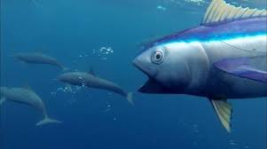

<html>
  <head>
    <title>An Experiment</title>
    <script src="jspsych/jspsych.js"></script>
    <script src="jspsych/plugin-html-button-response.js"></script>
    <script src="jspsych/plugin-html-keyboard-response.js"></script>
    <link href="jspsych/jspsych.css" rel="stylesheet" type="text/css" />

  </head>
  
  
  <body></body>
  
  
  <script>

    var jsPsych = initJsPsych({
      on_finish: function() {
        jsPsych.data.displayData();
      }
    });

    
    var timeline = [];

    
    
    var welcome = {
      data: {
          screen_id:"welcome"
      },  
      type: jsPsychHtmlButtonResponse,
      //stimulus: "<p style='color:dodgerblue; font-size:60pt;'>Welcome to the Stroop Experiment</p>",
      //choices: ["<p style='border:none; background-color:pink; color:teal;font-size:60pt;'>Click Here to Continue</p>"],
      stimulus: `
              <p style='color:dodgerblue; font-size:40pt;'>Welcome </p>
              <p style='color:yellow; font-size:40pt;'>to</p>
              <p style='color:red; font-size:40pt;'>the</p>
              <p style='color:teal; font-size:40pt;'>Experiment </p>
              `,
      choices: ["<p style='border:pink; background-color:pink; color:grey;font-size:30pt;'>Click Here to Continue</p>"],
      
};
      

    
    

    
    var instructions = {
      type: jsPsychHtmlKeyboardResponse,
      stimulus: `
        <p>In this task you will be presented with one of <b>four</b> words</p>
        <p> You will also be presented with an image</p>
        <p> The first category is animals. Here is the list of words: <b>dog, cat, duck, fish</b></p>
        <p></p>
        <p> The second category is color</p>
        <p> Here is the list of words: <b>duck, boat, fish, cat</b></p>
        <p> Press <b>d</b> , <b>b </b>, <b>f</b>,<b>c</b> for the <b> word </b> on the screen</p>
        <p>E.g., press <b> d </b> for <b> duck </b> </p>
        
        <p>Make your responses as quickly and as accurately as possible</p>
        <p>Press any key to begin.</p>
        `,
        post_trial_gap: 2000
    };
    
    
    
    var stroop_stimuli = [
      { stimulus:`
        <p style='color:mediumvioletred; font-size:40pt;'> DUCK</p>
        </img>
        `,
        image: "duck",
        word: "duck",
        congruency: "Congruent",
        correct_response: 'd'
      },


      { stimulus:`
        <p style='color:mediumvioletred; font-size:40pt;'>FISH</p>
        </img>
        `,
        image: "fish",
        word: "fish",
        congruency: "Congruent",
        correct_response: 'f'
      },


      { stimulus:`
        <p style='color:mediumvioletred; font-size:40pt;'>DUCK</p>
        </img>
        `,
        image: "cat",
        word: "duck",
        congruency: "Incongruent",
        correct_response: 'd'
      },

      { stimulus:`
        <p style='color:mediumvioletred; font-size:40pt;'>BOAT</p>
        </img>
        `,
        image: "fish",
        word: "boat",
        congruency: "Incongruent",
        correct_response: 'b'
      },
    ];
    
    
    
    
    var fixation = {
      type: jsPsychHtmlKeyboardResponse,
      stimulus: '<div style="font-size:80px;">+</div>',
      choices: "NO_KEYS",
      trial_duration: function(){
        return jsPsych.randomization.sampleWithoutReplacement([1000, 2000], 1)[0];
      },
      data: {
        task: 'fixation'
      }
    };

    
    
    var display_stroop_item = {
      type: jsPsychHtmlKeyboardResponse,
      stimulus: jsPsych.timelineVariable('stimulus'),
      choices: ['d', 'b', 'f','c'],
      data: {
        task: 'stroop',
        correct_response: jsPsych.timelineVariable('correct_response'),
        image: jsPsych.timelineVariable('image'),
        word: jsPsych.timelineVariable('word'),
        congruency: jsPsych.timelineVariable('congruency'),
      },
      on_finish: function(data){
        data.correct = jsPsych.pluginAPI.compareKeys(data.response, data.correct_response);
      }
    };

    
    var stroop_procedure = {
      timeline: [fixation, display_stroop_item],
      timeline_variables: stroop_stimuli,
      randomize_order: true,
      repetitions:5
    };
  

    timeline.push(welcome);
    timeline.push(instructions);
    timeline.push(stroop_procedure);
    jsPsych.run(timeline);


  </script>
</html>